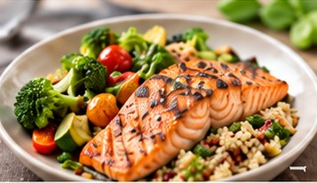
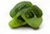
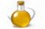

Saumon grillé, quinoa et légumes
DînerFacile25 min4 pers.
Un plat sain et savoureux, riche en oméga-3 et en fibres. Parfait pour un dîner léger et nourrissant.
450kcal
32 gprotéines
48 gglucides
18 glipides
3 ingrédients déjà en réserve
4
 À acheterSaumon frais4 pavés (600 g)
À acheterSaumon frais4 pavés (600 g) En réserve ✓Quinoa200 g
En réserve ✓Quinoa200 g
À acheterBrocoli1 tête (300 g) À acheterTomates cerises250 g
À acheterTomates cerises250 g
En réserve ✓Huile d'olive2 c. à soupe En réserve ✓Citron1 pièce
En réserve ✓Citron1 pièce